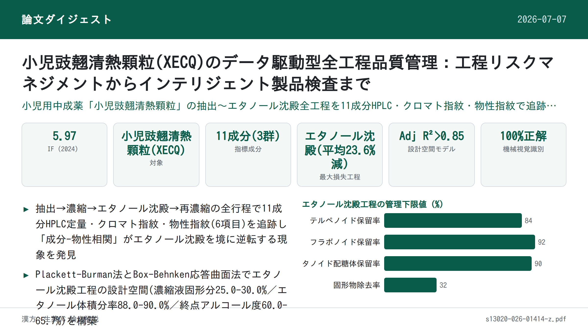

小児豉翹清熱顆粒(XECQ)のデータ駆動型全工程品質管理：工程リスクマネジメントからインテリジェント製品検査まで

<!-- 方針: ほぼ全訳＋必要に応じた補足。原文の構成・節立てに沿って訳出。「> 補足:」は訳者注。 -->
書誌情報
- 原題: Data-driven full-chain quality control for Xiaoer Chiqiao Qingre granules: from process risk management to intelligent product testing
- 著者: Nan Wang・Yukun Chang（共同筆頭著者）・Yue Cheng・Jing Zhao・Chao Li・Lu Sun・Liang Feng・Yanjun Yang・Xiaobin Jia（中国薬科大学附属江寧中医病院／中医薬学院、Jumpcan Pharmaceutical Co., Ltd. 江蘇省小児中医薬・特色製剤重点実験室、南京市江寧区中医病院、中国）
- 掲載: Chinese Medicine (2026) 21:130. https://doi.org/10.1186/s13020-026-01414-z（オープンアクセス, CC BY 4.0）
- インパクトファクター: 5.97（Chinese Medicine, JCR 2024 / Clarivate。BioxBio等の集計値に基づく。要確認: Clarivate公式ポータルでの一次確認は未実施）
- 受理経過: 受領 2026-02-06 / 受理 2026-04-27
- 資金: 江蘇省科学技術成果転化計画（BA2020077）、江蘇省衛生発展研究センター（JSHD2021040）、江蘇省科学技術副主任プロジェクト（BY20230551）
補足: XECQ = 小児豉翹清熱顆粒（Xiaoer Chiqiao Qingre granules）。14種の生薬からなる小児の風熱感冒（急性上気道感染症・手足口病）に用いる中成薬。QbD = Quality by Design。CQA = 重要品質特性。CPP = 重要工程パラメータ。本論文は分析法論文ではなく、製造工程全体のQC・工程最適化（DoE）・機械視覚検品を統合したプロセス品質研究である点に留意。図（Fig. 1〜10）は本文中に記述はあるが、今回の処理では画像抽出ができなかったため、図の内容は本文の説明文をもとに訳出し、視覚情報そのものは「原文参照」とする。
要旨（Abstract）
背景: 小児豉翹清熱顆粒(XECQ)は小児の風熱感冒治療に広く用いられる中成薬である。しかし、多段階の製造工程はロット間のばらつきを大きくし、恒常的な品質管理の課題となっている。QbD（Quality by Design）の考え方に基づき、本研究は工程分析・パラメータ最適化・インテリジェントモニタリングを統合した枠組みを構築し、ロット間の一貫性向上と服薬安全性の確保を図った。
方法: QbDの枠組みの中で、HPLCによる多成分定量、クロマトグラフィー指紋、物性指紋を用いて、抽出・濃縮・エタノール沈殿・煎液回収を含む製造工程全体の品質をモニタリングした。11の有効成分を定量的に特性評価し、主要な物理化学的性質との関係を解析した。テルペノイド・フラボノイド・フェニルエタノイド配糖体の保留率を重要品質特性(CQA)と定義した。Plackett-Burman計画法で重要工程パラメータをスクリーニングし、Box-Behnken応答曲面法によりエタノール沈殿工程の設計空間を構築した。さらに、顆粒の外観を迅速・非破壊的に評価する機械視覚システムを開発した。
結果: エタノール沈殿は、追跡した11成分の中で最大の損失をもたらす工程であり、平均減少率は23.6%であった。一方、maackiain-7-O-グルコシドは濃縮段階で38.1%という顕著な減少を示した。エタノール沈殿後、フラボノイド・フェニルエタノイド配糖体・テルペノイドの濃縮係数はそれぞれ 1.56・1.53・1.50 であり、保留率と化合物極性の間に負の相関があることが示唆された。工程を通じた成分の再分配により、粘度の相対標準偏差(RSD)が有意に低下し、系の均質性向上と成分-物性相関の逆転が示された。これらの代表的成分をCQAとして用い、頑健な回帰モデル（調整済決定係数 Adj R2 > 0.85）を構築し、CQA保留率を最大化しつつロット間ばらつきを最小化する設計空間を定義した。さらに、機械視覚システムは識別および異常ロット排除の両方で100%の精度を達成した。
結論: 本研究は「工程分析-パラメータ最適化-インテリジェントモニタリング」を統合した全体的戦略を提案し、XECQの品質管理を強化するとともに、TCM製造を経験駆動からデータ駆動へと移行させるための頑健な枠組みを提供する。
キーワード: 小児豉翹清熱顆粒、Quality by design、HPLC指紋、物性指紋、エタノール沈殿工程の設計空間、機械視覚
補足: 要旨では「maackiain-7-O-グルコシド」という化合物名が用いられているが、本論文が定義する11指標成分（芍薬苷・酸化芍薬苷・没食子酰芍薬苷・アルビフロリン・オノニン・ダイジン(要旨では「ダイゼイン」)・ゲニステイン・ワゴノシド・フォルシトシドA・フォルシトシドE・サリドロシド）にはこの名称の化合物は含まれていない。結果節の記述（濃縮段階でオノニン(MBHG)の比率が顕著に低下）と符合することから、著者らがオノニン(ononin, MBHG)を誤ってmaackiain-7-O-グルコシドと表記した可能性があるが、原文の記載を確認できないため断定はできず、原文のまま訳出した。同様に要旨の「daidzein」は方法・結果節で一貫して用いられる「daidzin（ダイジン, DDG）」と表記が異なるが、これも原文ママとし、本文では文脈に応じて使い分けた原文表記に従う。
1. 序論（Introduction）
TCM（中医薬）複合製剤の品質一貫性は、その近代化・国際化を阻む中核的なボトルネックである。この課題は、生薬原料に内在する複雑性・変動性と、製造工程における不可避な変動の両方に由来する。
従来の「品質は試験で保証する（Quality by Testing, QbT）」モデルは最終製品検査に依拠しており[1, 2]、工程パラメータの変動や原料変動といった重要な変動要因に起因する品質のばらつきを事前に制御することができない。これは品質規格と臨床効果の間に埋めがたい体系的な乖離を生む。したがって、受動的なQbTから能動的なQbDへと品質管理パラダイムを進化させることは、業界のコンセンサスであり喫緊の必要事項となっている[3]。QbDの理念はJoseph M. Juranの品質設計思想[4, 5]に端を発し、後にICH Q8-Q10ガイドラインで形式化された。その中核は、品質目標製品プロファイル(QTPP)を体系的に定義することで、重要原材料特性(CMA)・重要品質特性(CQA)・重要工程パラメータ(CPP)を特定し、それにより頑健な設計空間と管理戦略を確立することにある[6–9]。これはプロセス分析技術(PAT)の統合とリアルタイムリリースを可能にする科学的枠組みを提供する。
XECQは14種の中薬材からなる：連翹(Forsythia suspensa (Thunb.) Vahl)、薄荷(Mentha canadensis L.)、荊芥(Nepeta cataria L.)、黄芩(Scutellaria baicalensis Georgi)、甘草(Glycyrrhiza uralensis Fisch.)などを含み、疏風・解表・清熱・消積（風邪を払い表証を解し、熱を清め食滞を消す）の効能を持つ[10, 11]。
小児用薬であるXECQを例に取ると、品質管理上の課題は特に深刻かつ代表的である。XECQは以下の14種の中薬材からなる（配合比率）：大豆(Glycine max (L.) Merr., 9.0%)、連翹(Forsythia suspensa (Thunb.) Vahl, 12.0%)、薄荷(Mentha canadensis L., 6.0%)、甘草(Glycyrrhiza uralensis Fisch., 5.0%)、大黄(Rheum palmatum L., 5.0%)、荊芥(Nepeta cataria L., 6.0%)、山梔子（焦製）(Gardenia jasminoides J.Ellis, 5.0%)、青蒿(Artemisia caruifolia Buch.-Ham. ex Roxb., 9.0%)、柴胡(Bupleurum chinense DC., 6.0%)、檳榔子(Areca catechu L., 4.0%)、厚朴(Magnolia officinalis Rehd.et Wils., 9.0%)、黄芩(Scutellaria baicalensis Georgi, 9.0%)、半夏(Pinellia ternata (Thunb.) Ten. ex Breitenb., 9.0%)、赤芍(Paeoniae Radix Rubra, 6.0%)[10]。疏風・解表・清熱・消積の効能を持ち[11]、臨床では主に小児の急性上気道感染症および手足口病の治療に用いられる[12, 13]。しかしながら、典型的なTCM複合製剤として、XECQの有効性は実証されているものの、原料と製造工程の複雑さが依然として業界共通の課題（品質管理指標の少なさ、ロット間の一貫性の乏しさ）を生んでいる。小児用医薬品であることから、より頑健な品質管理システムの構築が急務である。小児の臓器は発達途上にあり、吸収・分布・代謝・排泄(ADME)過程が成人と異なるため、独自の薬力学的特性を持つ。多成分の相乗作用はTCM処方の薬効の基盤である一方、薬物動態学的相互作用のリスクを高める可能性もある。この特性は、小児用製剤に対してより高い処方の一貫性を要求する[14, 15]。したがって、QbDの理念に基づくXECQの頑健な品質管理システムの構築は、実践的にも模範的にも大きな価値を持つ。
QbDの概念は体系的な品質管理の枠組みを提供するが、複雑なTCM処方の製造工程全体への適用は依然として重大なボトルネックに直面している。QbD理念に基づく中成薬の品質管理システムは、全工程を通じた体系的・リスクベースの戦略を提唱する[16–18]（Figure S1）。この枠組みはQTPPの定義から始まり、それがCQAの特定を導く[19, 20]。リスク評価を通じてCQAはCPPと結び付けられる。実験計画法(DoE)により最適な操作範囲を定義する設計空間を確立し、最終的に包括的な管理戦略によって品質の一貫性を確保する[21–23]。この手法は「目的定義-リスクマネジメント-空間最適化-戦略実装」という閉ループ管理システムを形成する。しかし、既存研究の多くは、製造工程全体を通じた複数成分と主要物理特性の共進化パターンの動的追跡・定量解析を欠いており、「ブラックボックス」問題は未解決のままである。例えば、工程最適化はしばしば単一または限定的な指標にのみ依拠し、複数の有効成分群全体の保留効率との相関を欠くため、設計空間の予測性・頑健性が限定的となる。一方、末端工程の管理は主にオフラインの破壊試験に依存しており、製造中のリアルタイムモニタリングとフィードバック調整が困難である。
これらの課題に対応するため、本研究では薬理学的関連性・代表性・工程感受性、およびQbD指向の多成分管理ロジックを総合的に考慮し[24]、テルペノイド（芍薬苷・酸化芍薬苷・没食子酰芍薬苷・アルビフロリン）、フラボノイド（オノニン・ダイゼイン・ゲニステイン・ワゴノシド）、フェニルエタノイド配糖体（フォルシトシドA・フォルシトシドE・サリドロシド）をCQAとして選定した。第一に、これらの化合物群はXECQを構成する生薬の主要な生物活性カテゴリー——テルペノイド・フラボノイド・フェニルエタノイド配糖体——を代表しており、構成生薬の主要な抗炎症・抗ウイルス成分として広く認識されている[25]。第二に、炎症シグナル伝達の調節・酸化ストレスの軽減・上皮バリア機能の保護といった報告済みの作用機序は、小児風熱感冒・急性上気道感染症の病態と密接に関連し、化学的安定性と臨床効果を結び付ける[26]。第三に、これらの成分は極性・溶解性・安定性などの物理化学的性質が多様であり、特にエタノール沈殿という重要な製造工程に高い感受性を持つため、工程による組成の再分配と品質変動を効果的に反映できる[11]。最後に、複合TCM製剤の治療効果は単一の主成分ではなく多成分の相乗作用に由来することを考慮すると、代表的な成分群のレベルでCQAを定義することは、QbDの枠組みの下でより合理的かつ包括的な品質管理戦略となる。以上より、これら11化合物をXECQの科学的・臨床的に妥当なCQAとして選定する根拠が示される。
これらの課題に体系的に対応するため、本研究は従来のQbD適用の範囲を超え、機序的知見の解明とXECQ特有の管理戦略の確立を目指した。個別の工程段階で化学マーカーと工程パラメータを相関させるにとどまった従来研究と異なり、本研究は製造工程全体を通じて化学成分と物理化学的性質の両方を動的・多次元的に追跡した。特筆すべきは、エタノール沈殿段階において「成分-物性」相関の逆転現象を同定した点であり、これは材料系の再構築が多成分組成と巨視的物性の間の相互作用パターンを根本的に変化させることを明らかにした。この知見は、TCM工程進化における長年の「ブラックボックス」問題を解く新たな機序的エビデンスを提供する。エタノール沈殿をXECQの主要な品質損失ノードと認識した上で、本研究はさらに、テルペノイド・フラボノイド・フェニルエタノイド配糖体の相乗的保留を中心とした、この重要工程に特化したデータ駆動型設計空間を構築した。単一指標の最適化ではなく、確立したモデルは複数群の保留効率とロット間の頑健性を統合しており、経験的なパラメータ調整を統計的に検証され機序的に解釈可能な管理戦略へと変換する。さらに、品質保証を工程最適化からインテリジェントな製品検証にまで拡張するため、本研究は色・質感・密度記述子と動的安全区間正規化・Bhattacharyya類似度指標を統合した112次元特徴融合型機械視覚フレームワークを開発した。この高次元特徴アーキテクチャにより、適合ロットと異常ロットのリアルタイム・非破壊判別が可能となり、QbDシステムのデータ結合型拡張を形成する。総じて、本研究は「成分進化-物理化学的再構築-設計空間構築-インテリジェント外観検証」を結ぶ、機序的に解釈可能でデータ駆動型の閉ループアーキテクチャを確立するものである。
この枠組みはXECQに特化した品質管理ソリューションを提供するだけでなく、深い工程理解とインテリジェント技術を構造的に統合することで、複雑なTCM処方の精密製造をいかに推進しうるかを示すものである。
2. 材料と方法（Materials and Methods）
2.1 試薬
XECQ製造工程の中間体15ロット（水抽出液、水抽出濃縮液、エタノール沈殿上清、エタノール沈殿濃縮液——それぞれ抽出・濃縮・エタノール沈殿・再濃縮の各工程に対応）はJichuan Pharmaceutical Group Co., Ltd.（ロット番号: 23110064A〜23110204A、いずれもGMP要件に適合）より提供された。XECQエタノール沈殿濃縮エキス（研究室調製、ロット番号: 20241124）、XECQ参照顆粒（研究室調製、ロット番号: 202412011〜202412015）も用いた。実験に用いた標準品は以下の通り：芍薬苷(paeoniflorin, ≥98.0%, ロット番号HR22112B1, Baoji Herbest Bio-Tech Co., Ltd.製)、酸化芍薬苷(oxypaeoniflorin, ≥98.0%, PS010199)、没食子酰芍薬苷(galloylpaeoniflorin, ≥98.0%, PS011182)、アルビフロリン(albiflorin, ≥95.0%, PS011455)、オノニン(ononin, ≥98.0%, PS000671)、ダイジン(daidzin, ≥98.0%, PS011911)、ゲニステイン(genistein, ≥98.0%, PS000785)、ワゴノシド(wogonoside, ≥98.0%, PS011071)、フォルシトシドA(forsythoside A, ≥98.0%, PS011810)、フォルシトシドE(forsythoside E, ≥95.0%, PS000591)、サリドロシド(salidroside, ≥98.0%, PS011472)（以上、成都普思生物科技有限公司 Chengdu Push Biotechnology Co., Ltd.より購入）。デキストリン(ロット番号240104042D)は南京化学試薬有限公司より、クロマトグラフィーグレードのリン酸(ロット番号B2211238)は上海Aladdin生化学技術より、クロマトグラフィーグレードのメタノール(ロット番号24015464)はTedia Company, Inc.より購入。実験用水はMilli-Q超純水システム(Merck Millipore, 米国)で調製した。
2.2 HPLC分析法とクロマトグラフィー指紋分析法
標準溶液の調製: 各標準品を精密に秤量しメタノールに溶解、5 mLに定容し、以下の濃度の混合標準溶液を調製した：酸化芍薬苷(YHSYG) 256.84 μg/mL、芍薬苷(SYG) 1558.54 μg/mL、没食子酰芍薬苷(MSZXSYG) 217.02 μg/mL、アルビフロリン(SYNZG) 584.92 μg/mL、オノニン(MBHG) 219.54 μg/mL、ダイジン(DDG) 596.48 μg/mL、ゲニステイン(RLMS) 208.74 μg/mL、ワゴノシド(HHQG) 395.61 μg/mL、フォルシトシドA(LQZGA) 1188.10 μg/mL、フォルシトシドE(LQZGE) 225.15 μg/mL、サリドロシド(HJTG) 234.43 μg/mL。メタノールで段階希釈した検量線用溶液を調製し、0.22 µmメンブレンフィルターで濾過後HPLC分析に供した（原文 Figure S2）。
試験溶液の調製: 水抽出液は超純水で1:2に希釈、水抽出濃縮液は1:20に希釈。同様に、エタノール沈殿上清は65%エタノールで1:2に希釈、エタノール沈殿濃縮液は1:20に希釈。希釈液は13,000 rpmで10分間遠心し、上清を採取。0.22 µmメンブレンフィルターで濾過後、濾液をHPLC分析に供した（原文 Figure S3）。
クロマトグラフィー条件: Waters Acquity HPLC C18カラム（4.6 mm × 250 mm, 5 μm）を使用。移動相はメタノール(A)と0.1%リン酸水溶液(B)。グラジエント溶出プログラム: 0–30分でBを90%から55%まで直線的に減少（Aは10%から45%に増加）; 31–35分でBを55%から39%まで減少（Aは45%から61%に増加）; 36–50分でBを39%から35%まで減少（Aは61%から65%に増加）; 51–55分でBを90%に戻す（Aは10%に減少、カラム再平衡化）。流速0.8 mL/min、カラム温度35 ℃、検出波長278 nm、注入量10 μL。この方法をマーカー成分の含量測定とHPLC指紋プロファイル構築の両方に用いた。
方法バリデーション: 中国薬局方2020年版第四部の総則に従い、特異性・直線性・精度・繰り返し性・安定性・回収率を検証した。同時に、HPLC指紋の精度・繰り返し性・安定性も評価した。
HPLC指紋の類似度分析: 全ロットのクロマトグラフィーデータに基づき、「中薬色譜指紋図譜相似度評価システムソフトウェア（2012年版）」を用いて基準スペクトル1-124A、2-124A、3-124A、4-124Aを選定。時間窓0.1分で平均法により基準スペクトル(R)を生成し、全スペクトルピークマッチングにより類似度を算出した。
2.3 XECQ中間体の物性指紋の確立と解析法
物性測定: すべての試験試料を25 ℃で平衡化した後、超音波処理10分間で十分に溶解・均質化した。中国薬局方2020年版の総則に従い、比重(SG)・固形分(SC)・pH・粘度(VIS)・電気伝導率(σ)・屈折率(RI)を同時に測定した。各パラメータは3連測定し平均値を用いた。得られたデータから物性指紋を構築した。
物性指紋プロファイルの構築と解析: 薬局方の規定と文献調査に基づき各物性の数値範囲を決定し、測定指標を0〜10の範囲に標準化した。各物性指標の数値範囲と対応する標準化変換式を表1に示す。
表1. XECQ主要工程中間体の物性標準化変換法
| 物性パラメータ | 略号 | 単位 | 数値範囲 | 変換式 |
|---|---|---|---|---|
| 相対密度 | SG | – | 0～2 | 5x |
| pH | pH | – | 0～7 | 10x/7 |
| 固形分 | SC | % | 0～50 | x/5 |
| 粘度 | VIS | mPa·s | 0～120 | x/12 |
| 電気伝導率 | σ | mS/cm | 0～20 | x/2 |
| 屈折率 | RI | – | 1～1.5 | 20(x−1) |
SG・pHを含む6つの物性の標準化値がすべて10に設定されたとき、これらの点を結ぶと正六角形が形成される。対照的に、実測値から得た標準化変換値を結ぶと不規則な六角形が形成され、これがXECQの重要工程段階における中間体の物性指紋スペクトルを表す。XECQ工程の主要中間体の物性指紋スペクトルに基づき、各製造段階の15ロットの物性パラメータを解析した。物性指紋スペクトルはOrigin ソフトウェアで構築し、直感的評価と類似度評価の両方で評価した。ロット間・工程間の品質一貫性とばらつきを評価するため、各物性パラメータの相関を工程内・工程間の両方で算出した。
2.4 XECQの主要工程段階における11指標成分の量比研究
固形分(SC)・比重(SG)・各指標成分の含量を統合し、総固形分に占める11指標成分およびそれぞれの群の比率を算出した。この解析により、3つの成分カテゴリーと11の代表成分の量比関係を、XECQの4つの主要工程段階を通じて検討した。
補足: 原文には計算式（重量パーセント = 固形分 × 成分濃度 / 相対密度 × 水の密度、という趣旨の式）が示されているが、PDFからのテキスト抽出時にレイアウトが崩れており、正確な式の表記を再現できなかった。式の詳細は原文参照。
2.5 エタノール沈殿工程の最適化と設計空間の構築
エタノール沈殿工程の評価指標（有効成分保留率、固形物除去率）と潜在的工程リスクの解析は補足資料S1に示されている。
XECQ水抽出濃縮液の調製とエタノール沈殿の手順: 複数ロットのXECQ水抽出液をプールし濃縮して、総固形分含量37.3%（105 ℃で恒量になるまで乾燥して測定）の濃縮液を得て、これをエタノール沈殿の原料とした。濃縮原料10 gを精密に秤量し、実験条件に応じて一定量の脱イオン水で固形分を調整した。十分に混合した後、Plackett-Burman計画に規定された流速で対応する体積分率のエタノール溶液を添加し、同時に規定の速度で機械撹拌した。設定量に達した時点でエタノール添加を停止した。混合物を規定温度で静置沈降させた。所定時間経過後、濾過し、沈殿物を50 ℃のオーブンで恒量になるまで乾燥して秤量した。上清を採取し、その体積を測定して以後の試験に用いた。
重要工程パラメータのスクリーニングのためのPlackett-Burman実験: Design Expert 11.0ソフトウェアを用い、以下のCQAを選定した：テルペノイド保留率(Y1)、フラボノイド保留率(Y2)、フェニルエタノイド配糖体保留率(Y3)、固形物除去率(Y4)。スクリーニング対象因子は、濃縮液固形分(A)・エタノール体積分率(B)・エタノール沈殿終点のアルコール度(C)・エタノール添加流速(D)・撹拌速度(E)・静置温度(F)・静置時間(G)。各因子の水準を表2に示す。
表2. Plackett-Burman計画の因子水準
| 因子 | 低水準(−1) | 高水準(1) |
|---|---|---|
| A: 濃縮液固形分(%) | 20 | 30 |
| B: エタノール体積分率(%) | 85 | 95 |
| C: エタノール沈殿終点のアルコール度(%) | 60 | 70 |
| D: エタノール添加流速(mL/min) | 20 | 60 |
| E: 撹拌速度(r/min) | 320 | 640 |
| F: 静置温度(℃) | 4 | 25 |
| G: 静置時間(h) | 12 | 24 |
エタノール沈殿工程最適化のためのBox-Behnken応答曲面計画: Design Expert 11.0ソフトウェアを用い、フェニルエタノイド配糖体保留率(Y1)・テルペノイド保留率(Y2)・フラボノイド保留率(Y3)・固形物除去率(Y4)をCQAとする3因子3水準のBox-Behnken計画を構築した（原文の表記に基づき番号を付した。実際の対応は表6・図8の見出し「テルペノイド保留率(Y1)・フラボノイド保留率(Y2)・フェニルエタノイド配糖体保留率(Y3)・固形物除去率(Y4)」を正とする）。この計画により、3つのCQAと、濃縮液固形分(A)・エタノール体積分率(B)・エタノール沈殿終点のアルコール度(C)という濃度変数との間の定量的関係を検討した。エタノール添加流速は20 mL/min、撹拌速度は320 r/min、静置温度は4 ℃、静置時間は24 hに固定した。エタノール添加後、さらに5分間撹拌を継続してから静置に移った。Box-Behnken計画の詳細を表3に示す。
表3. Box-Behnken計画の因子水準
| 因子 | 低水準(−1) | 中水準(0) | 高水準(1) |
|---|---|---|---|
| A: 濃縮液固形分(%) | 20 | 25 | 30 |
| B: エタノール体積分率(%) | 85 | 90 | 95 |
| C: 沈殿終点のアルコール度(%) | 60 | 65 | 70 |
応答曲面モデリング: テルペノイド保留率(Y1)、フラボノイド保留率(Y2)、フェニルエタノイド配糖体保留率(Y3)、固形物除去率(Y4)は以下の式で算出した：
- Y1 = （エタノール沈殿上清中のテルペノイド含量 / 濃縮液中のテルペノイド含量）× 100%
- Y2 = （エタノール沈殿上清中のフラボノイド含量 / 濃縮液中のフラボノイド含量）× 100%
- Y3 = （エタノール沈殿上清中のフェニルエタノイド配糖体含量 / 濃縮液中のフェニルエタノイド配糖体含量）× 100%
- Y4 = （エタノール沈殿後の総沈殿固形物量 / 濃縮液中の総固形物量）
モデルフィッティングは通常の線形回帰と段階的回帰により、工程パラメータが各応答値に及ぼす影響を検討した：
Y = a0 + Σaixi
（Y = 有効成分の保留率または固形物除去率、a0 = 定数項、ai = 各工程パラメータxiに対応する回帰係数）
この線形回帰分析は主に各パラメータの独立効果を評価するための予備的スクリーニングに用いた。工程空間の最適化・予測を目的とする最終的な数理モデルでは、線形項・交互作用項・二次項を含む簡約3次モデルを基本形とし、段階的回帰によりCQA(Y1〜Y4)とそれに対応するCPP(A, B, C)をフィッティングした。
モデルの検証と診断: 実測した有効成分含量に基づき、上式に代入して各成分の保留率および固形物除去率を算出した。Design-Expert 11.0ソフトウェアで3次多項式応答曲面モデルを構築した。段階的回帰により有意因子をスクリーニングし、調整済み決定係数(Adj R2)・予測決定係数(predicted R2)・AIC/BICを指標にモデルを最適化した。さらに、モデルの過剰適合の可能性を評価するため200回の並べ替え検定を実施した。
2.6 顆粒品質の一貫性評価のための機械視覚法
画像取得システムの構築: 顆粒画像取得のための機械視覚システムは、画像取得ユニットと処理ユニットから構成される。取得ユニットはデジタルカメラ・LEDライトパネル・密閉チャンバー・高さ調整可能な試料台からなり、撮像環境の一貫性と再現性を確保する（原文 Fig. 1）。処理ユニットはMATLAB 2021b(MathWorks Inc., 米国)を搭載した高性能コンピュータが管理し、すべての画像処理・品質評価アルゴリズムを実行する。
画像処理と品質評価のワークフロー: システムはデータ層・処理層・出力層の3つの主要モジュールで構成される。標準顆粒画像(G1〜G11)を品質基準確立のための訓練セットとし、独立した標準顆粒(G12〜G14)と参照顆粒(RG1〜RG5)をシステム性能検証のためのテストセットとした。すべての画像は照明・解像度・フォーマット(JPG)を厳密に統一して撮影した。前処理段階では、各生画像から5つの標準化サブ領域（400 × 400ピクセル）を自動抽出した。中核処理段階では、色（LAB色空間）・質感・形態特徴を統合した多次元解析手法により、各試料から高次元特徴ベクトルを抽出してインテリジェント評価を行った（特徴定義と抽出アルゴリズムの詳細は補足資料S2）。出力層は各試料の定量化特徴とその品質評価結果を出力し、「合格(Accept)」「要再検討(Review)」「不合格(Reject)」の3段階に分類した。
2.7 統計解析
前述の通り、異なるロットのHPLC指紋スペクトルの類似度は「中薬色譜指紋図譜相似度評価システムソフトウェア（2012年版）」で解析した。Design Expert 11.0ソフトウェアはXECQのエタノール沈殿工程の最適化と設計空間構築に用いた。最終製品の品質評価には、自社開発の顆粒機械視覚品質評価システムを適用した。加えて、SPSS 22.0でPearson相関解析、Origin 2023でPCA次元削減、SIMCA 14.1でOPLS-DAモデルを構築した。200回の並べ替え検定(P < 0.05)によりモデルの頑健性を確認した後、VIP > 1のしきい値で主要な差異変数を抽出した。
3. 結果（Results）
3.1 HPLC法バリデーションとXECQ中間体の品質分析
方法バリデーション: XECQ工程中間体分析用HPLC法の体系的バリデーションを実施した。特異性試験では、11のターゲット成分すべてが水抽出液・水抽出濃縮液・エタノール沈殿上清・エタノール沈殿濃縮液において対応するクロマトピークを示し、ブランク溶媒（超純水・65%エタノール・メタノール）に干渉は認められなかった。混合標準溶液(HB0)の2〜64倍段階希釈において、全分析対象は優れた直線性（線形相関係数r ≥ 0.999）を示した（原文 Table S1）。本法は良好な繰り返し性(n=6)・機器精度(n=6)・24時間溶液安定性(n=7)を示し、ピーク面積の相対標準偏差(RSD)はいずれも3.00%以下であった（原文 Table S2）。添加回収試験では、11成分の平均回収率は95.10〜103.37%、RSDは3.64%以下であった。上記の中で最も低濃度の混合標準品をメタノールで希釈し10 μL注入し、シグナル対ノイズ比(S/N)約3を基準に検出限界(LOD)を、約10を基準に定量限界(LOQ)を算出した。
表: 11成分のLOD・LOQ（原文 Table S3、単位 μg/mL）
| 成分（略号） | LOD (μg/mL) | LOQ (μg/mL) |
|---|---|---|
| サリドロシド (HJTG) | 0.6456 | 2.2098 |
| フォルシトシドE (LQZGE) | 0.6541 | 1.9146 |
| 酸化芍薬苷 (YHSYG) | 0.6742 | 0.9302 |
| アルビフロリン (SYNZG) | 0.7048 | 11.6619 |
| 芍薬苷 (SYG) | 0.8747 | 8.2795 |
| ダイジン (DDG) | 0.6242 | 0.3338 |
| 没食子酰芍薬苷 (MSZXSYG) | 0.6073 | 0.6760 |
| フォルシトシドA (LQZGA) | 0.4887 | 0.5208 |
| オノニン (MBHG) | 0.5226 | 0.3223 |
| ワゴノシド (HHQG) | 0.0301 | 0.1400 |
| ゲニステイン (RLMS) | 0.0555 | 0.1947 |
以上より、本法は強い特異性・優れた直線性・高い精度と正確さ（原文 Table S4）、良好な溶液安定性を示し、XECQ中間体および最終製品中の対象成分の定量分析に適することが示された。
指標成分含量の測定: XECQ水抽出液15ロット（原文 Table S5）、水抽出濃縮液（原文 Table S6）、エタノール沈殿上清（原文 Table S7）、エタノール沈殿濃縮液（原文 Table S8）の試験溶液について含量測定を実施した。各ロットの成分含量の算出結果は以降の検討の基礎となった。
補足: 15ロット×4工程段階の個別含量値そのもの（原文 Table S5〜S8）は補足資料に収載されており、今回参照した本文テキストには数値が再掲されていない。各ロットの実測含量は原文参照。
3.2 HPLC指紋分析法バリデーションと類似度評価
方法バリデーション: 繰り返し性・精度・24時間安定性の評価は、すべてフォルシトシドAを内部基準ピークとして実施した。ロット23110064Aのエタノール沈殿濃縮液から6つの独立試料を調製して試験した。相対保持時間(RRT)のRSDは0.01〜0.09%、相対ピーク面積(RPA)のRSDは0.29〜1.94%であり、良好な繰り返し性を示した。
試験溶液（試料4-064A）を同一クロマトグラフィー条件下で6回連続注入した。RRTとRPAのRSDはそれぞれ0.01〜0.04%、0.19〜2.89%であった。「中薬色譜指紋図譜相似度評価システム（2012年版）」による検証では、6回の注入プロファイルすべての類似度が1.000であり、優れた機器精度が示された。同一試験溶液を0, 2, 4, 8, 10, 12, 24時間の時点で分析したところ、RRTのRSDは0.01〜0.11%、RPAのRSDは0.11〜3.84%であり、24時間以内の良好な溶液安定性が示された。これらのバリデーション結果は、確立した方法が信頼性が高く、以降の解析に適することを確認するものである。
指紋の確立と類似度分析: 異なる工程段階の15ロット試料（水抽出液: 1-064A〜1-204A、水抽出濃縮液: 2-064A〜2-204A、エタノール沈殿上清: 3-064A〜3-204A、エタノール沈殿濃縮液: 4-064A〜4-204A）について、HPLC指紋と対応する基準クロマトグラム（原文 Fig. 2）を確立した。類似度評価結果（原文 Table 4）は、すべての共通ピークのRRTのRSDが1%未満であり、高度に一貫したクロマトグラフィー分離挙動を示した。
類似度分析はさらに、水抽出濃縮液・エタノール沈殿上清・エタノール沈殿濃縮液が基準クロマトグラムと高いロット間類似度を示し、これらの工程段階での良好な製品一貫性を示すことを明らかにした。特筆すべきは、水抽出液段階の3ロット（084A, 134A, 164A）が基準クロマトグラムとの類似度が比較的低く(<0.960)、原料に一定のばらつきがあることを示唆した点である。しかし、工程が進むにつれ、中間体の類似度は顕著に改善し、製造工程が原料のばらつきを効果的に均質化したことを示した。加えて、ロット184A・194A・204Aは、水抽出濃縮液・エタノール沈殿上清・エタノール沈殿濃縮液の各段階でそれぞれの基準クロマトグラムとの間で許容可能な類似度を維持したが、その値は0.990をわずかに下回った。
補足: 原文 Fig. 2（A: 水抽出液15ロット、B: 水抽出濃縮液15ロット、C: エタノール沈殿上清15ロット、D: エタノール沈殿濃縮液15ロット、それぞれのHPLC指紋と基準プロファイル）は画像抽出ができなかったため、図そのものは原文参照。
3.3 物性測定と物性指紋プロファイルの構築
各種物性の測定: 水抽出液・水抽出濃縮液・エタノール沈殿上清・エタノール沈殿濃縮液の4工程段階における15ロットについて、6つの物性パラメータ（SC, SG, pH, σ, RI, VIS）を測定した（原文 Fig. 3A–F）。SGは2連測定、その他のパラメータはすべて3連測定とした。各段階での並行測定のRSDはいずれも3%未満であり、良好な分析精度・信頼性を示した。各工程段階の15ロット間のばらつきを評価したところ、SGとσの全体RSDは一貫して1%未満であり、これらのパラメータが工程全体を通じて高い安定性を持つことが示された。対照的に、SC・RI・VISの全体RSDは段階依存的な変動を示した。特に、水抽出濃縮液の段階ではVIS・σ・SCの変動が他の3段階と比較して相対的に大きく、濃縮工程が系の物理化学的状態を大きく変化させることを示唆した。これらの変化はおそらく、溶媒除去に伴う溶質の漸進的濃縮と分子間相互作用の変化を反映している。しかし、これらの変動にもかかわらず、エタノール沈殿上清とエタノール沈殿濃縮液の物性パラメータは再収束する傾向を示し、アルコール沈殿後の系の再構築と安定化を示した。
物性指紋プロファイルの構築: XECQ主要工程段階の中間体の物性指紋スペクトルを原文 Fig. 4A–Eに示す。これらのスペクトルに基づき、ロット間の全体的な一貫性を評価するため15ロットの中間体について類似度分析を実施した（結果は原文 Fig. 4F–I）。4つの工程段階を通じ、試料のpHは初期の上昇の後に低下するパターンを示し、他の物性パラメータは概して上昇→低下→再上昇のパターンを辿った。物性指紋スペクトルの重ね合わせにより、異なる段階・ロットの中間体における各品質指標の類似点・相違点が明らかになった。
水抽出液・エタノール沈殿上清・エタノール沈殿濃縮液の6つの物性指標は比較的集中した分布を示した。対照的に、水抽出濃縮液はVIS・σ・SCの3指標で変動を示し、特にVISで顕著な変動が認められた。VISについては、ロット144Aと124Aがそれぞれ最高値と最低値に対応した。
類似度分析の結果、水抽出濃縮段階では、ロット114A・124A・144A・154A・174Aが少なくとも他の5ロットとの類似度スコア0.800未満を示し、これらのロットが全体的な性質において主群から逸脱していることが示唆された。具体的には、144Aと114A・124A・154Aの類似度はそれぞれ0.500未満・0.700未満であった（原文の記載順に対応関係が明確でない箇所があり、詳細な対応は原文参照）一方、144Aと174Aの類似度は0.9776という高い値に達した。これらのロットは相対密度・固形分・粘度・屈折率・電気伝導率に有意なばらつきを示しており、144A・174A、および114A・124A・154Aが15ロット中で品質面における周辺グループを形成しうることを示した。
3.4 HPLC・物性指紋に基づくXECQ品質推移の相関解析
XECQの主要工程段階における11指標成分の量比関係の検討: 複数の指標成分の定量結果と実測した物性パラメータに基づき、様々なXECQロットの各工程段階における単位総固形分あたりの11指標成分の量比を算出した（原文 Fig. 5）。表5に示す通り、水抽出液・水抽出濃縮液・エタノール沈殿上清・エタノール沈殿濃縮液における単位総固形分あたりの11指標成分およびその亜群の比率は、それぞれ5.57%・6.95%・10.56%・10.25%であった。
単位総固形分あたりの構造組成について、工程が進むにつれ3成分カテゴリー間の比率配分は変化した：フラボノイド：フェニルエタノイド配糖体：テルペノイドの比は、水抽出液における1.0：1.9：4.2から水抽出濃縮液における1.0：2.3：3.5へと変化し、その後安定化した。具体的には、水抽出液から水抽出濃縮液の段階にかけて、テルペノイド(YHSYG, SYNZG, SYG, MSZXSYG)の比率は低下し、フェニルエタノイド配糖体(LQZGE, LQZGA, HJTG)の比率は上昇した。フラボノイド(RLMS, MBHG, HHQG, DDG)の比率はわずかに上昇した。
水抽出液からエタノール沈殿濃縮液に至る全工程を通じ、MBHGとYHSYGを除くすべての指標成分の単位総固形分あたりの比率は上昇傾向を示し、エタノール沈殿による不純物除去が効果的であることを示した。MBHGの比率低下は、精製過程における本成分の顕著な損失を示唆する一方、YHSYGの比率がほぼ不変であったことは、その損失率が不純物除去率と同程度であったことを示す。濃縮段階におけるMBHGとYHSYGの比率低下、および煎液回収段階における大半の活性成分・総活性成分の全般的な減少は、濃縮工程に有効成分の損失をもたらす要因が含まれる可能性を示唆する。
エタノール沈殿の過程で、フラボノイド・フェニルエタノイド配糖体・テルペノイドの単位総固形分あたりの含量は、沈殿前と比較してそれぞれ1.56倍・1.53倍・1.50倍に増加した。これは、エタノール沈殿工程が指標成分の純度を効果的に高めたことを示し、これらの倍率変化は3成分カテゴリーの極性と逆相関していた。
指標成分含量と物性パラメータの相関解析: SPSS 22.0を用いたバイバリエート相関解析により、15ロットの水抽出液・水抽出濃縮液・エタノール沈殿上清・エタノール沈殿濃縮液における物性パラメータと主要成分含量の関係を検討した（原文 Fig. 6）。
エタノール沈殿後、4つの指標成分（グループ1: HJTG, LQZGA, LQZGE, DDG）と3つの指標成分（グループ2: HHQG, RLMS, SYNZG）の間に負の相関が観察され、各グループ内では正の相関が確認された。加えて、グループ1の成分はpHとわずかな正の相関を、グループ2の成分はpHとわずかな負の相関を示した。グループ内の正の相関は、同一カテゴリー内の成分が類似した化学的性質を共有し、同一の工程条件に同期して応答することを示唆する。グループ間の負の相関は、工程選択性により2つの成分グループが相互排他的な挙動を示しうることを示し、関連工程を調整することで複数成分の収率バランスを取れる可能性を示唆する。残りの成分には有意な相関は見られなかったが、芍薬苷(SYG)は概ねグループ1と、オノニン(MBHG)はグループ2と関連する傾向を示した。
濃縮段階の後、ダイゼイン（原文ママ）を含む8成分は強い正の工程間移行相関を示し、高い移行安定性と工程操作（濃縮・エタノール沈殿など）による影響の少なさを示した。対照的に、MBHG・MSZXSYG・YHSYGの負または弱い移行相関は、成分の変換または損失を反映している可能性がある。
指標成分含量と物性パラメータの多変量統計解析: 主成分分析(PCA)により17変数から3つの主成分が抽出され、累積分散寄与率は97.63%であり、モデルがデータの変動の大部分を効果的に捉えていることを示した。pH・SG・SCは、異なる段階の工程中間体のロット間変動に対する主要な寄与因子として同定された。Hotellingのt²検定の結果、すべての段階の試料が95%信頼限界内に収まった。PCAスコアプロット（原文 Fig. 7A）は、15ロットの中間体が4つの製造段階を通じて明確なクラス内クラスタリングと工程間分離を示すことをさらに示した。
OPLS-DAモデル解析の結果は、独立変数の適合指標(R2x)が0.992、従属変数の適合指標(R2y)が0.64、予測能力指標(Q2)が0.63であることを示した。R2yとQ2はいずれも0.5を超えており、モデルの信頼性の高い説明力と予測力を示している。OPLS-DAスコアプロットは4つの工程段階のサンプル点間で明確な分離を示し、ロット内クラスタリングは密であり、段階間の有意な重なりは見られなかった（原文 Fig. 7B）。このモデルに基づき、VIP > 1.0を示す6指標（SYG, LQZGA, LQZGE, SYNZG, DDG, VIS）を、水抽出液・水抽出濃縮液・エタノール沈殿上清・エタノール沈殿濃縮液の15ロットの品質差異マーカーとして選定した（原文 Fig. 7C）。このうち、SYGとLQZGAはVIP > 2の主要バイオマーカーとして同定された。モデルの信頼性を検証するため200回の並べ替え検定を実施し、Q2回帰直線のY切片が0未満であることから過剰適合がないことが確認された（原文 Fig. 7D）。
3.5 XECQのエタノール沈殿工程の最適化と設計空間の構築
重要工程パラメータのスクリーニング: Plackett-Burman実験計画における各ロット中間体のテルペノイド保留率(Y1)・フラボノイド保留率(Y2)・フェニルエタノイド配糖体保留率(Y3)・固形物除去率(Y4)について結果を得た。段階的回帰分析で確立した交互作用二項モデルは、4つの応答変数すべてに対して優れた予測能力を示し、調整済み決定係数(Adj R2)はY1で0.9971、Y2で0.9542、Y3で0.9699、Y4で0.9326であった（表6、詳細な回帰式は補足資料S3）。
表6. Plackett-Burman計画の線形回帰結果（Adj R2・F値）
| モデル | Y1(テルペノイド) | Y2(フラボノイド) | Y3(フェニルエタノイド配糖体) | Y4(固形物除去率) |
|---|---|---|---|---|
| 線形(Linear) | Adj R²=0.7102, F=4.85 | Adj R²=0.5784, F=3.16 | Adj R²=0.7231, F=5.10 | Adj R²=0.8046, F=7.47 |
| 簡約線形(Reduced linear) | Adj R²=0.8234, F=13.82 | Adj R²=0.5418, F=5.34 | Adj R²=0.6958, F=9.39 | Adj R²=0.7730, F=10.37 |
| 簡約2因子交互作用(Reduced 2FI) | Adj R²=0.9971, F=415.81 | Adj R²=0.9542, F=33.72 | Adj R²=0.9699, F=45.32 | Adj R²=0.9326, F=26.37 |
分散分析(ANOVA、表7)の結果、各工程パラメータの応答値への影響には有意差があることが示された。濃縮液固形分(A)はY1・Y2・Y3に高度に有意な正の効果(P < 0.01)を示した。エタノール体積分率(B)はY1・Y3・Y4に高度に有意な効果(P < 0.01)を示す因子であり、Y3にも有意な効果を示した。エタノール沈殿終点のアルコール度(C)はY1・Y2・Y4に高度に有意な正の効果(P < 0.01)を示した。加えて、AC・ADなど複数の交互作用項が有意または高度に有意であることが同定された。
表7. 簡約2因子交互作用モデルの回帰係数と有意性（P値）
| 項目 | Y1係数 | Y1 P値 | Y2係数 | Y2 P値 | Y3係数 | Y3 P値 | Y4係数 | Y4 P値 | 絶対偏回帰係数の和 |
|---|---|---|---|---|---|---|---|---|---|
| A | 2.568 | 0.001** | 3.444 | 0.001** | 3.361 | 0.002** | 0.371 | 0.000** | 9.743 |
| B | 0.471 | 0.008** | −0.145 | 0.054 | 0.079 | 0.006** | −0.402 | 0.008** | 1.097 |
| C | −0.019 | 0.001** | 1.296 | 0.003** | 0.945 | 0.079 | 0.249 | 0.002** | 2.509 |
| D | −0.243 | 0.455 | −0.181 | 0.020* | 0.031 | 0.043* | – | – | 0.455 |
| E | – | – | – | – | – | – | −0.107 | 0.217 | 0.107 |
| F | 0.127 | 0.005** | −0.171 | 0.003** | −0.338 | 0.004** | – | – | 0.636 |
| G | – | – | – | – | – | – | 0.119 | 0.017* | 0.119 |
| AB | −0.025 | 0.011* | – | – | −0.012 | 0.190 | – | – | 0.037 |
| AC | −0.014 | 0.032* | −0.065 | 0.005** | −0.041 | 0.011* | – | – | 0.120 |
| AD | 0.010 | 0.004** | 0.009 | 0.033* | – | – | – | – | 0.019 |
| AF | −0.008 | 0.020* | – | – | 0.008 | 0.089 | – | – | 0.016 |
| BE | – | – | – | – | – | – | 0.001 | 0.010* | 0.001 |
| Adj R² | 0.9971 | 0.9542 | 0.9699 | 0.9326 | – |
（*P < 0.05で有意, **P < 0.01で高度に有意）
有意因子の偏回帰係数の絶対値を比較した結果、因子A（濃縮液固形分）が最も強い効果を示し、次いで因子C（沈殿終点アルコール度）、因子B（エタノール体積分率）の順であった。有意性（P値）と効果の大きさに基づき、A・B・Cを以降のBox-Behnken計画の重要工程パラメータとして選定した。
主要工程ユニットの数理モデルの構築: Box-Behnken実験計画とその結果を実施した。段階的回帰分析により、テルペノイド保留率(Y1)・フラボノイド保留率(Y2)・フェニルエタノイド配糖体保留率(Y3)の簡約3次モデル、および固形物除去率(Y4)の簡約2次モデルを確立した。分散分析の結果、すべてのモデルが高度に有意(P < 0.05)であり、不適合項は非有意(P > 0.05)であった（原文 Table S10）。各モデルの調整済み決定係数(Adj R2)はいずれも0.85を超え（表8）、実験結果への良好な適合性と高い予測能力を示した。
表8. 有効成分保留率・固形物除去率モデルの回帰分析結果
| 項目 | Y1係数 | Y1 P値 | Y2係数 | Y2 P値 | Y3係数 | Y3 P値 | Y4係数 | Y4 P値 |
|---|---|---|---|---|---|---|---|---|
| 定数項 | 8076.985 | – | 5853.224 | – | 3600.731 | – | −137.112 | – |
| A | 62.954 | 0.9469 | −222.721 | 0.0021** | 7.726 | 0.5112 | −0.783 | <0.0001** |
| B | −259.720 | 0.0010** | −146.667 | 0.9195 | −46.684 | 0.0148* | 3.614 | <0.0001** |
| C | −35.991 | 0.3222 | 20.133 | 0.0015** | −107.944 | 0.0031** | −0.196 | <0.0001** |
| AB | – | – | 6.075 | 0.3474 | – | – | – | – |
| AC | −1.788 | 0.0008** | −1.174 | 0.0098** | −0.104 | <0.0001** | 0.018 | 0.0878 |
| BC | 3.221 | 0.0068** | −0.057 | 0.0314* | 1.331 | 0.0029** | – | – |
| A² | −0.041 | 0.0163* | −0.289 | 0.0352* | −0.019 | 0.1108 | – | – |
| B² | 1.690 | 0.0097** | 0.792 | 0.1003 | 0.027 | 0.0392* | −0.019 | 0.0740 |
| C² | −1.245 | 0.0330* | – | – | 0.882 | 0.0002** | – | – |
| A²B | – | – | −0.013 | 0.0579 | – | – | – | – |
| AB² | – | – | −0.030 | 0.0025** | – | – | – | – |
| AC² | 0.013 | 0.0113* | – | – | – | – | – | – |
| A²C | – | – | 0.022 | 0.0097** | – | – | – | – |
| B²C | −0.025 | 0.0007** | – | – | – | – | – | – |
| BC² | 0.010 | 0.0328* | – | – | −0.011 | 0.0105* | – | – |
| モデル全体 | 0.0011** | 0.0072** | <0.0001** | <0.0001** | ||||
| 不適合(Lack of fit) | 0.6115 | 0.6321 | 0.6474 | 5.8100 | ||||
| Adj R² | 0.9446 | 0.8786 | 0.9481 | 0.9411 |
補足: Y4（固形物除去率）の「不適合(Lack of fit)」欄の値「5.8100」は原文の記載をそのまま転記したものだが、他欄がP値（0〜1の範囲）であるのに対しこの値だけ1を超えており、統計量の種類（F値等）が異なる可能性がある。原文でのラベル・単位の確認は取れていないため訂正はせず原文ママとした。詳細は原文参照。
応答曲面解析により、主要工程パラメータ間の複雑な交互作用が明らかになった（原文 Fig. 8A–L）。エタノール体積分率が低い条件下では、最終エタノール濃度が65%以上に増加するとテルペノイド成分の保留率(Y1)は上昇した。対照的に、最終エタノール濃度が低い条件では、エタノール体積分率の増加とともに保留率はいったん上昇した後に低下した。濃縮液の固形分を増加させると保留率は向上したが、一定の最終エタノール濃度を超えると、固形分のさらなる増加による効果はほとんどなく、保留率を低下させる場合もあった。最終エタノール濃度が低く固形分が高い条件下では、フラボノイド成分の保留率(Y2)は高い固形分の下で上昇した。対照的に、エタノール濃度の上昇は保留率の低下と関連した。
エタノール体積分率が低いほどフェニルエタノイド配糖体(Y3)の保留率は向上した。したがって、固形分が高い場合には低い最終エタノール濃度が成分保留に有利であり、固形分が低い場合には最終エタノール濃度の中程度の増加が保留率を向上させた。固形物除去率(Y4)は3つの工程パラメータすべてと正の相関を示した。
エタノール沈殿工程の設計空間の構築: Box-Behnken計画に基づき、中間体品質を確保するための重要品質特性の最低許容基準を設定した（表9）。多指標重畳法と95%予測区間を組み合わせて頑健な操作範囲を定義した。
表9. 有効成分保留率・固形物除去率の管理下限値
| 指標 | 管理下限値(%) |
|---|---|
| テルペノイド保留率 | 84.0 |
| フラボノイド保留率 | 92.0 |
| フェニルエタノイド配糖体保留率 | 90.0 |
| 固形物除去率 | 32.0 |
原文 Fig. 8M–Oに示す通り、濃縮液固形分をそれぞれ20.0%・25.0%・30.0%として設計空間を評価した。固形分20.0%では適切なパラメータ空間を形成できないことが観察された。したがって、濃縮液固形分の管理範囲は25.0〜30.0%に設定した。得られた設計空間が不規則であったため、固形分25.0〜30.0%に対応する空間を重ね合わせ、実際の工程操作のための矩形領域を定義した（原文 Fig. 8P）。この領域をXECQエタノール沈殿工程の設計空間とし、以下のパラメータ範囲を定めた：濃縮液固形分25.0〜30.0%、エタノール体積分率88.0〜90.0%、最終エタノール濃度60.0〜65.7%。
管理空間の確立: 設計空間内・空間外の両方で検証点を選定した（表10）。空間内の検証点T1〜T3は、濃縮液固形分30.0%・エタノール体積分率90.0%・最終エタノール濃度60.0%の管理パラメータに設定した。結果として、エタノール沈殿後の測定応答値のRSDはそれぞれ1.622%・1.028%・1.332%・3.086%であった。設計空間外に位置する検証点T4〜T6は管理目標を満たさず、定義した管理空間の予測能力が良好であることが確認された。
表10. 有効成分保留率・固形物除去率の管理下限値検証
| 検証点 | A(%) | B(%) | C(%) | Y1(%) | Y2(%) | Y3(%) | Y4(%) |
|---|---|---|---|---|---|---|---|
| 空間内 T1 | 30 | 90 | 60 | 90.322 | 95.768 | 93.313 | 38.358 |
| 空間内 T2 | 30 | 90 | 60 | 90.150 | 96.442 | 93.446 | 36.107 |
| 空間内 T3 | 30 | 90 | 60 | 87.729 | 94.506 | 91.244 | 36.869 |
| 空間外 T4 | 25 | 85 | 60 | 88.991 | 96.075 | 93.988 | 31.842 |
| 空間外 T5 | 30 | 95 | 70 | 82.719 | 88.892 | 88.631 | 40.294 |
| 空間外 T6 | 20 | 90 | 60 | 86.282 | 92.049 | 89.124 | 32.241 |
補足: T5・T6ではY1（テルペノイド保留率、82.719%・86.282%）が表9の管理下限値(84.0%)を下回り、T4ではY2（フラボノイド保留率、96.075%）はむしろ目標を上回るがY4（固形物除去率、31.842%）が管理下限値(32.0%)をわずかに下回る。このように空間外の検証点は個々のCQAで基準を外れており、設計空間の妥当性を裏付ける結果となっている。
3.6 機械視覚による顆粒品質の一貫性評価
色特徴の抽出とXECQデジタル画像の可視化: XECQ顆粒の色の一貫性を定量評価するため、標準顆粒(G1〜G14)と参照顆粒(RG1〜RG5)の中心領域サブ画像（原文 Fig. 9A）を解析した。画像をRGBからLab色空間に変換し、輝度(L)と色度(a, b)情報を分離した。a/bチャネルの色度分布は標準顆粒と参照顆粒の間で顕著に異なっていた。ロット間の中心領域サブ画像の正規化確率密度ヒストグラムでは、標準顆粒はロット間で一貫したパターンを伴うより集中したa/b分布を示したのに対し、参照顆粒はより大きなばらつきを示した（原文 Fig. 9B, C）。訓練セット・テストセットのすべての試料のヒストグラムを重ね合わせると、標準顆粒の色分布は高度に集中していたのに対し、参照顆粒の色分布はより分散しており、色の一貫性が低いことを示した（原文 Fig. 9D）。
ヒストグラムのビニングによる情報損失の可能性を避けるため、可視化の次元削減にカラー投影法を用いた。この手法は画像の色情報を離散的な点群に分解し、異なるロットの顆粒画像間の色度分布特性を直感的に可視化することを可能にした（原文 Fig. 9E）。結果は、標準顆粒と訓練セット顆粒の色度点群クラスターが類似した凝集パターンを示す一方、参照顆粒の点群はより分散し、周縁部に多数の外れ値を伴うことを示した。
さらに、色距離ヒートマップ(原文 Fig. 9F)を用いて全ロット間の全体的な差異を定量化した。標準顆粒ロット間のヒートマップは主に白色を呈し色の変動が最小限であったのに対し、参照顆粒と標準顆粒間のヒートマップは主に赤色を呈し、顕著な色の差異を反映した。
XECQデジタル画像の質感・密度特徴の抽出と可視化: XECQの微細構造を体系的に評価するため、標準顆粒・参照顆粒の中心領域画像を質感と空間分布の両観点から解析した。まず、グレーレベル同時生起行列(GLCM)を用いて顆粒表面の質感を定量化し、コントラスト・相関・エネルギー・均質性の4パラメータを統計解析した。質感特性の差異を視覚的に示すため、正規化GLCM行列をヒートマップとして提示した。色の濃淡（青→赤のグラデーション）は異なるグレーレベルペアの同時生起確率を直感的に表し、より赤い色は対応するグレーレベル組み合わせがより頻繁に出現することを示す。G1〜G2、G12〜G14、RG1〜RG5ロットの中心領域の代表的サブ画像を解析した。それらのグレースケール画像と対応する256階調でのGLCMヒートマップの解析（原文 Table S11）により、標準顆粒のヒートマップにおける高輝度領域（高確率領域）が対角線に沿って集中した紡錘形分布を示すことが明らかになった。これは隣接ピクセルのグレー値が高度に類似していることを示し、一貫した表面反射率と集中した粒度分布を反映する。対照的に、参照顆粒のGLCMヒートマップの明るい領域は明確なシフトと分散を示した（原文 Fig. 10A, B）。
次に、ロットG1-G2、G12-G14、RG1-RG5の顆粒中心領域サブ画像を適応的二値化とウォーターシェッドアルゴリズムでセグメント化し、空間分布特性を定量化した。原文 Fig. 10Cに示す通り、粒子密度・粒子数・平均面積・面積の標準偏差を含む粒子空間分布の定量解析は、標準顆粒と参照顆粒の間に有意な差異を明らかにした（原文 Table S12）。
多次元特徴融合型の顆粒品質評価システム: 訓練画像（trained_params.mat）に基づき顆粒品質評価システムを稼働させ、XECQ顆粒の品質ベンチマークを確立した。次いでテストセットを評価し、特徴行列ファイル(feature_matrix.xlsx)と品質検査報告書(quality_report.xlsx)を出力した。標準顆粒テスト試料のうち、G12_3.jpgとG13_5.jpgは総合スコアが85 ≤ Stotal < 95の範囲に収まったため「要再検討」判定となった（表S13）。特徴スコアモジュールの解析によると、G12_3.jpgは同ロットの他の試料と比較して色ヒストグラムと色特徴統計のスコアが低く、この領域では顆粒エキスと賦形剤の混合が他の領域に比べて不均一である可能性を示唆した。一方、G13_5.jpgは質感特徴統合スコアに異常が見られ、粒度分布の不均一性が原因と考えられた。参照顆粒については、報告書はすべて「不合格(Reject)」と判定した。中でも、RG4_5.jpgは総合スコアが低いにもかかわらずマハラノビス距離スコアは0.968であった。マハラノビス距離の類似度は特徴の平均からの偏差に依存するため、これは本試料の特徴ベクトルの分布が訓練セットの特徴ベクトルの分布と整合していることを示す。したがって、生の特徴値には大きな差異があるにもかかわらず、共分散構造は類似しているためマハラノビス距離が近くなる。
本システムは重み付けスコアリングとマハラノビス距離に基づく異常検知戦略を採用し、正確な品質評価を提供した。従来の粉体試験法と比較して、この機械視覚システムは顆粒外観評価の効率を大幅に向上させる。
4. 考察（Discussion）
TCM複合製剤の品質一貫性管理は、その近代化・国際化を制約する重要なボトルネックである。
本研究は、深層機械学習・QbD駆動型工程最適化・機械視覚に基づくオンラインモニタリングを統合したXECQの品質管理システムを確立した。本システムは品質管理上の課題に対応するとともに、複雑なTCM系の従来の「ブラックボックス」を打破するための、理論から実践に至るスケーラブルなデータ駆動型枠組みと研究パラダイムを提供する。
多次元解析を通じて、本研究はまず前処理段階における「成分と物性」の相乗的共進化の動的機序を明らかにした。水抽出・濃縮段階では、テルペノイド成分の熱感受性のため比率が有意に低下した一方、フラボノイドとフェニルエタノイド配糖体は熱安定性と溶解性がより高いため相対的に濃縮された。この知見は、極性差のみに基づく従来の解釈を拡張し、成分推移における熱感受性・溶解性などの性質の重要な役割を浮き彫りにする。より重要な点として、本研究はエタノール沈殿前後における「成分-物性」相関の逆転を発見した。機序的には、エタノール沈殿は系内の溶媒極性と分子間相互作用ネットワークを根本的に変化させる。高濃度エタノールの導入は媒体の誘電率を低下させ、多糖類・タンパク質などの親水性高分子を取り巻く水和層を弱め、それらの凝集・沈殿を促進する。これらの高分子コロイド成分は水素結合・鎖の絡み合い・保水を通じて粘度の主要な寄与因子であるため、その除去により系の構造粘度は大幅に低下する。同時に、フラボノイド・フェニルエタノイド配糖体・テルペノイドなどの低分子成分の再分配は、極性低下条件下での溶解性の違いにより生じる。より極性の高い成分は優先的に上清に分配される一方、溶解性の低い成分や弱極性の成分は高分子マトリックスと共沈する場合がある。この選択的分配は高分子と低分子の間の組成バランスを再構築し、それにより分子間相互作用パターン（水素結合・π-π スタッキング・疎水性相互作用など）を修飾する。その結果、物性を決定する主要因は高分子ネットワーク構造から、残存する低分子の相対比率と相互作用状態へとシフトする。
したがって、観察された成分-物性相関の「逆転」は、系の構造階層の遷移を反映する：エタノール沈殿前は粘度などの物性は主にコロイド状高分子ネットワークに支配され、沈殿後はこれらの物性は残存可溶性画分の組成と相互作用状態により強く影響される。本質的に、エタノール沈殿は単純な不純物除去工程ではなく、製剤内部の相互作用トポロジーを再構築する物理化学的再編成プロセスとして働く。これは、成分の再分配が粘度のRSD低下（均質性の向上）だけでなく、成分-物性相関の方向と強さの変化ももたらした理由を説明する。これは、TCM製剤の巨視的物性が個々の成分特性の単純な総和ではなく、全構成成分間の複雑な相互作用であることを示している。その結果、工程パラメータの調整は物性に対して非線形的に影響しうる。この機序は、測定困難な化学品質特性を測定容易な物理指標から間接的に予測するための科学的根拠を提供し、TCM生産におけるプロセス分析技術の応用に理論的基盤を与える。
以上を踏まえ、本研究はQbDを適用してエタノール沈殿という重要工程を最適化した[27]。生薬原料に内在するばらつきを考慮すると、従来の固定パラメータ工程はしばしば安定した生産と一貫した製品品質を保証できない。多目的応答曲面モデリングを通じて、本研究は濃縮液固形分・エタノール体積分率・最終エタノール濃度の間の複雑な相互作用を解明し、従来の単一パラメータ設定に代わる設計空間を確立した。
このアプローチは原料変動への工程の適応性を大幅に高め、TCM生産を「経験駆動型」から「データ駆動型」パラダイムへと推進する。これはリアルタイムリリースへの道を開き、効率的な不純物除去と有効成分保持という2つの重要目標をバランスよく達成する。
化学品質検査に内在する遅延に対応するため、本研究は機械視覚に基づくインテリジェント検出システムを開発し、品質評価における革新的な転換を示した。112の形態・質感特徴を抽出しマハラノビス距離を異常検知に応用することで、本システムは外観品質の定量的・多スケール解析を可能にし、人間の目では認識できない微小な欠陥を識別するのに十分な感度を持つ。本システムはQbDアプローチと組み合わさることで閉ループ品質管理枠組みを形成する：QbDは工程設計段階で能動的に品質を確保し、機械視覚は製品段階で迅速・非破壊的な最終検査と等級付けを提供する。これにより検査時間は数時間からリアルタイムに短縮され、オンラインでの個体ごとの非破壊試験が可能となり、従来の破壊的サンプリングの統計的限界を克服する。
もちろん、本研究には一定の限界があり、それは今後の研究の明確な方向性も示している。抽出から煎液回収に至る全工程を通じた成分・物性の推移パターンを解析したものの、現行の品質管理戦略は主にエタノール沈殿工程とそれ以降の工程の精密最適化に焦点を当てている。前段の抽出工程については、重要品質特性のオンラインリアルタイムモニタリング手法と閉ループ管理戦略が未確立である。今後の研究では、近赤外分光法(NIRS)などのプロセス分析技術を組み込み、抽出中間体の重要品質特性のリアルタイムモニタリングを可能にすることが考えられる。モデル予測制御(MPC)アルゴリズムと組み合わせることで、「静的設計空間」から「動的リアルタイム制御」への移行を実現する閉ループ戦略を確立し、最終的に原料から最終製品に至る全工程でのインテリジェントな品質管理を達成しうる。機械視覚については、畳み込みニューラルネットワーク(CNN)を統合して高次元特徴の自律的抽出を行い、多波長イメージング技術と組み合わせて外観形態と内部化学組成との定量的構造-活性相関を確立することが、システムの識別能力と解釈可能性をさらに高めるための重要な方向性となるだろう。
5. 結論（Conclusion）
本研究は、多次元の品質推移解析、QbDに基づく工程最適化、インテリジェントな機械視覚モニタリングを統合し、包括的なデータ駆動型品質管理枠組みを確立した。この枠組みは、XECQにおける組成と物性の間の動的な結合を解明し、重要なエタノール沈殿工程のための頑健な設計空間を確立するだけでなく、リアルタイム品質モニタリングのための非破壊機械視覚システムも開発する。その中核的な革新性は、生産前のパラメータ最適化と生産後のインテリジェント品質検査との間の相乗的な閉ループを実現した点にあり、複雑な天然物製剤における品質一貫性の課題に対応する新たなパラダイムを提供し、TCM製造のインテリジェント化を推進する。
訳者補足（実務向けメモ）
以下は原文には無い、QC実務向けの整理（訳者注）。
- 本論文は成分定量法の論文ではなく、製造工程全体のQbD型プロセスQC研究である。11成分HPLC・クロマト指紋・6項目の物性指紋を、抽出→濃縮→エタノール沈殿→再濃縮の4段階すべてで並行取得し、「化学組成」と「物理特性（比重・固形分・pH・粘度・電気伝導率・屈折率）」を相互に紐付けている点が最大の特徴。物性測定は薬局方公定法に準拠した比較的簡便な項目のみで完結しており、汎用の実験室設備で追試しやすい。
- エタノール沈殿が最大の品質変動ノード（11成分平均23.6%の損失、濃縮段階でも特定成分が38.1%減）という定量結果は、実務上「どの工程を重点管理すべきか」の優先順位付けに直結する。特に、沈殿前後で成分-物性相関が逆転するという知見は、「粘度などの簡易物性測定値から化学組成の変化を間接的に推定できる可能性」を示唆しており、PAT（プロセス分析技術）導入の理論的根拠として実務に応用しやすい。
- 設計空間（濃縮液固形分25.0-30.0%／エタノール体積分率88.0-90.0%／最終エタノール濃度60.0-65.7%）は、他社他工程への直接移植には注意が必要。本設計空間はXECQという特定の14生薬処方・特定の抽出濃縮条件（固形分37.3%の濃縮原料）を前提に構築されたものであり、CQAの管理下限値（テルペノイド保留率84.0%、フラボノイド保留率92.0%、フェニルエタノイド配糖体保留率90.0%、固形物除去率32.0%）も本処方固有の値である。他処方へ適用する場合は、同様のPlackett-Burman＋Box-Behnken設計を自社処方で再構築する必要がある。
- 機械視覚システム（112次元特徴・色/質感/密度）は、化学分析を代替するものではなく外観検品を高速化・非破壊化するものという位置づけに注意。「Accept/Review/Reject」の3段階判定は、破壊試験に頼らないロット別スクリーニングの一次選別として実務に組み込みやすいが、本文中の判定しきい値（総合スコア85〜95で要再検討）は自社の訓練データセットで再校正する必要がある。
- 限界: 前段の抽出工程についてはオンラインリアルタイムモニタリングが未確立（著者ら自身も今後の課題として明記）。また、要旨中の化合物名（maackiain-7-O-グルコシド、daidzein）が本文の指標成分名（オノニン、daidzin）と整合しない箇所があり、原文自体に表記のゆらぎがある点は再現・引用時に注意したい。
- 補足資料（Figure S1〜、Table S1〜S13: QbD全体像、検量線、精度/回収率、ロット別含量、Plackett-Burman/Box-Behnken詳細回帰式、GLCM・粒子分布詳細など）の細目は原文参照。